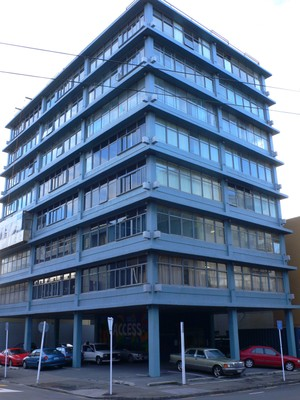
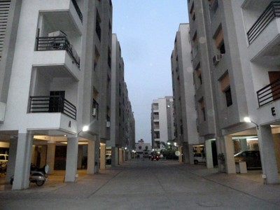
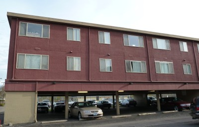
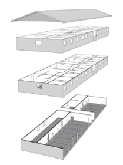
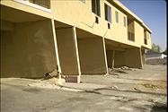
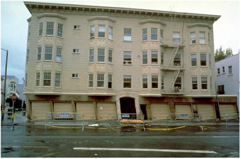
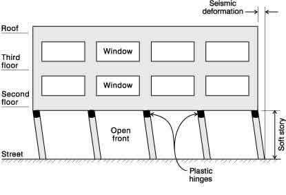
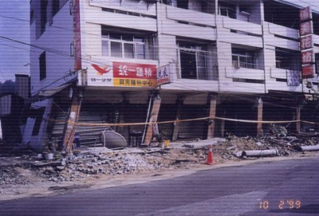
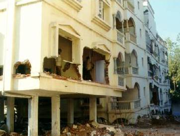
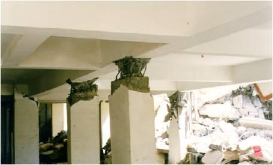

Soft storey [SOS]
One storey is higher than others, or one storey is weaker than others. A soft or weak storey exists if the height of that storey is at least 15% greater than storeys above or below; or if it has at least 30% fewer columns in the case of a frame system, or at least 30% less full-height structural or infill wall length in the case of a wall or infill wall system, or if by other engineering calculation or approximation the storey appears to have 30% less lateral stiffness or strength. This irregularity is often found in buildings where open first (ground) storey is used to make space for parking, shops, or offices.

Examples of soft storey configurations (A. Charleson, Seismic Design for Architects, Architectural Press 2008, p146, Figure 9.3).

Soft storey in a reinforced concrete building, New Zealand (A. Charleson)

Soft storey in reinforced concrete buildings, India (S. Brzev)


Olive View Hospital suffered severe damage in the 1971 San Fernando, California, due to discontinuous reinforced concrete shear walls shown shaded on the vertical section drawing. A soft two-storey layer of rigid reinforced concrete frames supported a stiff shear wall-frame structure above. Severe damage occurred in the soft storey portion, as shown in the photo (FEMA 454)


Soft storey wood-frame buildings are common in suburban areas of California (such as Berkeley) and Pacific Northwest, USA. In most cases, these are residential apartment buildings and ground floor is used for parking, as shown on the photo (S. Brzev). An exploded view of a typical soft-storey wood-frame building is shown on the drawing (FEMA P-807).


Several soft-storey wood-frame buildings were damaged in the 1994 Northridge earthquake and the 1989 Loma Prieta, California earthquake (left photo: Courtesy of the NICEE, University of California, Berkeley; right photo: EERI)


Several reinforced concrete frame buildings with open front suffered damage in the 1999 Chi Chi, Taiwan earthquake. These buildings had masonry infill walls in the upper storeys. The rigid upper storeys caused significant lateral displacements in the columns at the lower level, as shown on the drawing. The photo shows a typical damage observed in these buildings (Yao and Sheu, World Housing Encyclopedia Report 62)

Several mixed occupancy buildings with stores at the ground floor were severely damaged or experienced collapse in the 2001 Bhuj, India earthquake (Indian Institute of Technology Bombay and EdM, 2001)

Ground floor is used for parking in many reinforced concrete framed buildings in Indian cities. Many buildings of this type experienced severe damage or collapse in the 2001 Bhuj earthquake. Left photo shows a building with open ground floor adjacent to a similar building that lost its ground floor due to the soft storey effect; right photo shows extensive damage in the columns at the ground floor level due to the earthquake, also due to the soft storey mechanism (Indian Institute of Technology Bombay and EdM, 2001)